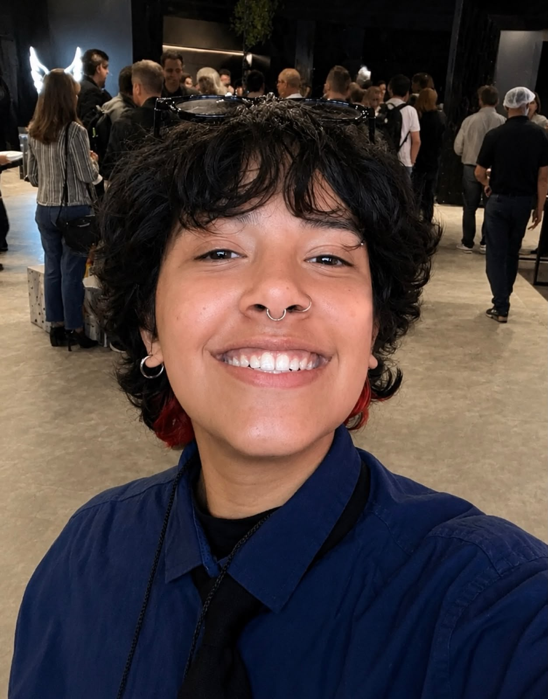
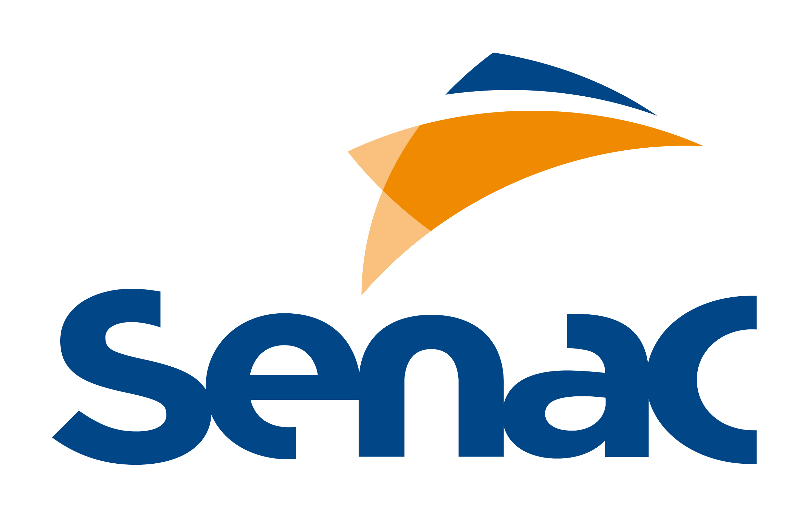

Pet Chico
- Site de venda de produtos de pet shop, com catálogo para o cliente escolher
- Link para agendamento de banho e tosa, facilitando o contato com a loja
Portfólio
Estudante de Desenvolvimento de Software Multiplataforma. Transformo ideias em sites e sistemas que resolvem problemas reais, usando HTML, CSS, JavaScript e banco de dados.

Meu nome é Yuri Rodrigues Silva e sou estudante de Desenvolvimento de Software Multiplataforma (DSM) na FATEC Zona Sul. Desde o meu primeiro contato com a tecnologia, percebi que um bom código vai além da tela: ele economiza tempo, organiza negócios e muda a rotina de quem usa. Foi esse impacto, na vida das pessoas e das empresas, que despertou minha vontade de criar soluções digitais.
Desde então, aprendo na prática. Cada curso, projeto e desafio virou uma oportunidade de evoluir. Tenho formação complementar pelo SENAC, no Programa Transforme-se em parceria com a Serasa Experian, e pelo Instituto Percorre, onde desenvolvi programação, desenvolvimento web, banco de dados, versionamento de código e trabalho em equipe.
Hoje, aprofundo meus estudos em programação, desenvolvimento de software e tecnologias web, unindo a teoria da graduação aos projetos reais que construo, como sites para pet shop e confeitaria e um sistema de controle de vendas. Sou dedicada, curiosa e movida por novos desafios, e meu objetivo é construir uma carreira sólida em tecnologia.

Desenvolvimento de Software Multiplataforma | cursando
A FATEC Zona Sul é uma instituição pública de ensino superior, reconhecida pela qualidade acadêmica e pela forte ligação com o mercado de tecnologia. O curso de DSM prepara profissionais para criar aplicações que funcionam em diferentes plataformas, como web, desktop e dispositivos móveis.
Na graduação, estudo programação, banco de dados, desenvolvimento web, engenharia de software, análise e modelagem de sistemas, além de metodologias usadas no dia a dia das equipes de desenvolvimento. Isso me ajuda a entender não só como escrever código, mas como planejar, estruturar e entregar um sistema completo.
Também participo de projetos acadêmicos que aplicam os conceitos na prática e fortalecem minhas habilidades técnicas, analíticas e de trabalho em equipe. Essa experiência tem sido decisiva para o meu crescimento profissional e para o desenvolvimento de soluções inovadoras.
Desenvolvimento Web
Formação com teoria e muita prática para criar páginas e aplicações modernas. Estudei HTML5 e CSS3 para estruturar e estilizar interfaces e aprendi a usar Git e GitHub para controlar versões, organizar o código e trabalhar em projetos com outras pessoas.
O curso foi além da técnica: trabalhei comunicação profissional, raciocínio lógico e matemático aplicado à tecnologia, soft skills, trabalho em equipe e metodologias voltadas ao mercado de trabalho.
No Projeto Integrador, apliquei tudo isso em soluções reais, acompanhando cada etapa: planejamento, implementação e apresentação dos resultados.
Participei também da palestra "Empoderamento Feminino no Mercado de Trabalho" e de visitas técnicas à TOTVS durante o evento Criatech, experiências que ampliaram minha visão sobre o mercado de tecnologia.

Programa Transforme-se | Serasa Experian
Formação em desenvolvimento de sistemas que reuniu lógica de programação, banco de dados, testes de software, versionamento de código e boas práticas de desenvolvimento, a base para escrever software organizado e confiável.
No curso de Lógica de Programação, desenvolvi o raciocínio lógico e a resolução de problemas por meio de algoritmos, estruturas de controle, Programação Orientada a Objetos (POO), organização de código e técnicas de depuração.
Em Informática Básica, aprendi o uso profissional do Windows, do Pacote Office, da internet e da organização digital, competências essenciais para o ambiente corporativo.
A experiência deu uma base sólida para o desenvolvimento de software e ampliou minha compreensão sobre tecnologia, produtividade e boas práticas do mercado.
Trabalhos em que coloquei em prática o que aprendi, sempre com um objetivo claro para o cliente.